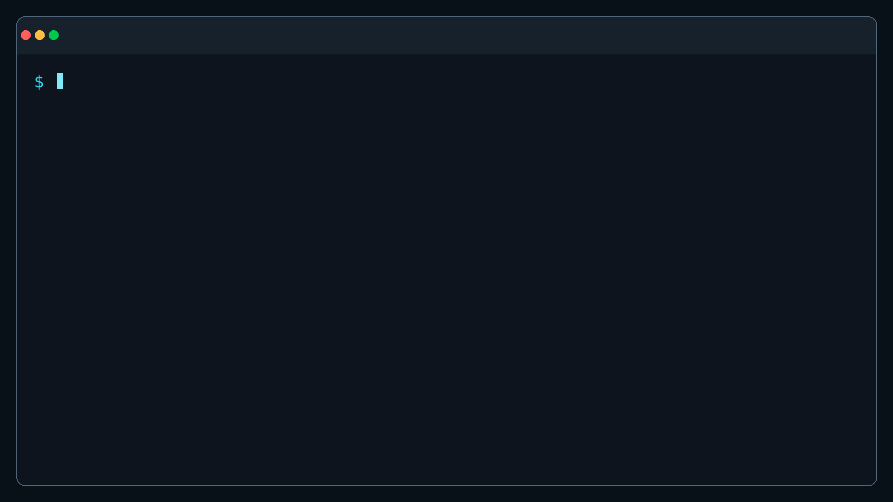

01
Define
Commit project contexts
Describe dev, qa, staging, and prod once in a project-level
.awsui.yaml.
prod → 999999999999
Verified AWS contexts for AI agents
Pick dev, qa, staging, or prod once. awsui authenticates, verifies the AWS identity, and launches your tools in that context.
STS verified before the child process starts
Running awsui prod -- codex verifies account 999999999999 in ap-northeast-1 before launching Codex.
One choice, every process
Your team shares the intended account and region. Each developer keeps their own local AWS profile binding.
Define
Describe dev, qa, staging, and prod once in a project-level
.awsui.yaml.
Bind
Keep machine-specific profile names outside Git while sharing the same logical environments.
Verify & launch
awsui verifies the authenticated account, sets the region, and only then starts the child process.
Designed to fail closed
A familiar profile name is not proof. awsui checks the real AWS identity before handing control to your agent or CLI.
STS identity check
Expected and authenticated account IDs must match. Wrong but valid credentials are blocked before they reach your command.
Production safety
A mismatch or failed identity check means the command never starts.
Team-friendly
Commit account and region definitions without committing each developer's profile names.
Deterministic runtime
Profile and region are set while direct credential overrides are removed from the launch environment.
Tool-agnostic
Claude Code, Codex, Kiro, Terraform, scripts, or an interactive shell—all use the same verified context.
Built for guarded workflows
Use the same project intent across Codex, Claude Code, Terraform, Antigravity, and any CLI without sharing developer-specific profile names.
AI coding agents
Choose dev, staging, or prod. awsui resolves the developer's local profile, authenticates it, checks the STS account, and only then starts the agent.
Infrastructure tooling
Commands never start when the authenticated AWS account does not match the account declared for the project environment.
Team environments
Commit expected accounts and regions in .awsui.yaml
while each developer keeps their machine-specific profile binding local.
CLI walkthrough
Define the project once, keep profile bindings local, and verify the real AWS identity before any child process starts.

Quick start
awsui uses the credentials already managed by AWS CLI. It never stores AWS credentials itself.
# Install as an isolated tool
uv tool install --python 3.13 awsui
# Initialize this AWS project
cd payment-service
awsui init
awsui bind prod
# Verify, then launch
awsui context prod
awsui prod -- codex
awsui dev
# Compatible explicit forms
awsui run prod -- claude
awsui shell devversion: 1
project: payment-service
contexts:
dev:
account: "111111111111"
region: ap-northeast-1
prod:
account: "999999999999"
region: ap-northeast-1
protected: trueFrequently asked
Short answers for teams bringing AI agents and CLI tools into AWS.
A named project environment such as dev or prod. It declares the expected 12-digit AWS account and region, then maps that shared intent to a local AWS profile.
It authenticates the bound profile, queries AWS STS caller identity, compares the returned account with the project configuration, and aborts when identity is unavailable or mismatched.
No. awsui uses the credentials and SSO sessions already managed by AWS CLI, prepares a deterministic child environment, and does not persist AWS access keys or session tokens.
Any child process can run inside a verified context, including Codex, Claude Code, Kiro, Antigravity, Terraform, and AWS CLI. awsui supports macOS, Linux, and Windows wherever Python 3.13 and AWS CLI v2 are available.
Documentation
Configuration, commands, workflows, and troubleshooting.
02完整的繁體中文安裝、設定與使用說明。
03Published versions and package installation details.
04Report a bug, request a feature, or join the discussion.
Bring your AI